機能
- 選択基礎の独自問題・解説・概念・復習・端末内の進捗保存。公式過去問題集ではありません。
- 検証候補の組成ノートでは、C3H8とC4H10のモル割合・質量割合を教育用近似値で比較します。
- 反応式のC・H・O収支、試料全体と1mol基準、独立した保存A/Bを分けて読みます。
新しい組成ノートはiPhone・iPadシミュレーターで計算、独立したA/B保存と再起動後の保持を確認しました。実機と通知の確認は継続中で、公開済み機能として案内していません。
検証したアプリの画面
iPhone・iPadシミュレーターの実際の検証画面です。画面・問題・解説は日本語。学習記録は検証用の例で、公開・審査承認を意味しません。


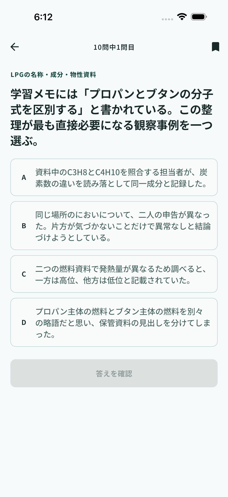

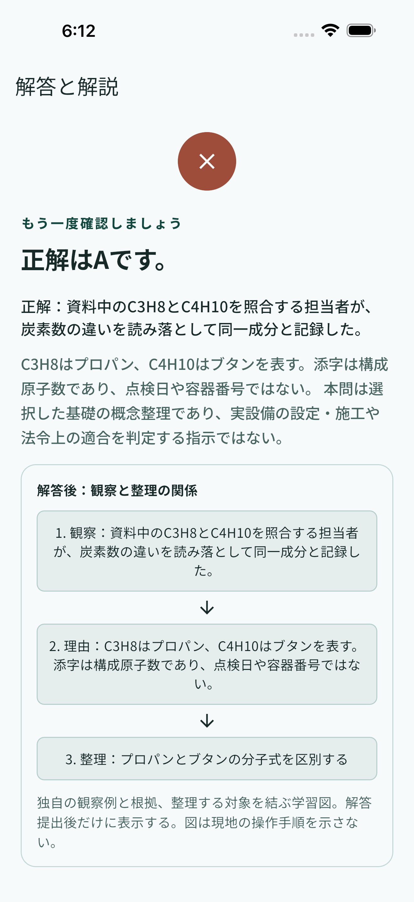

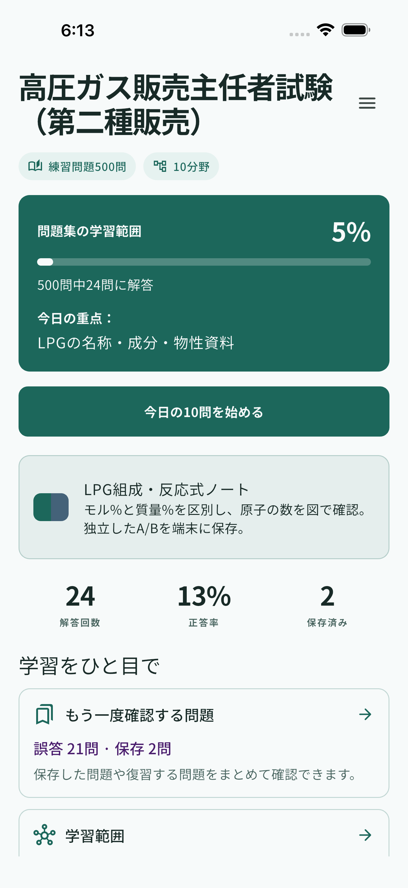

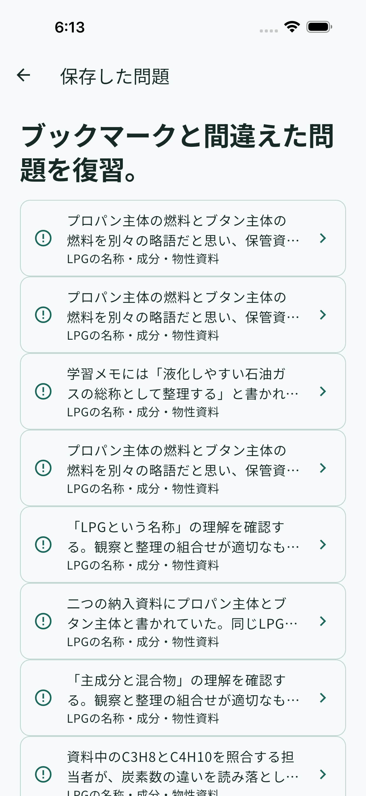

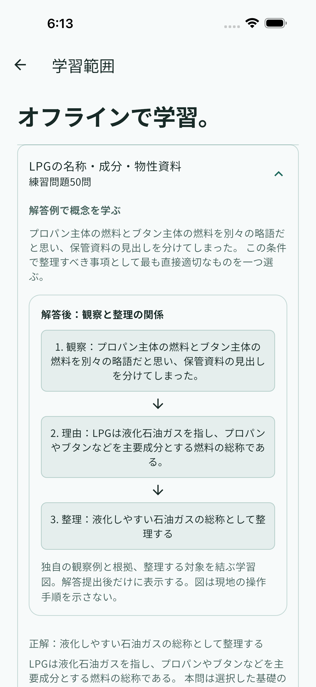
iPadの検証画面を開く

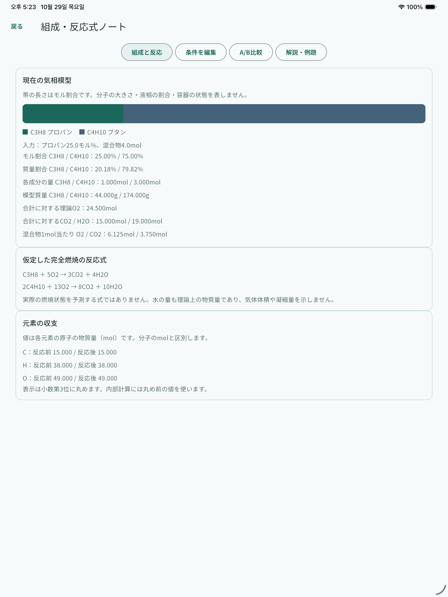

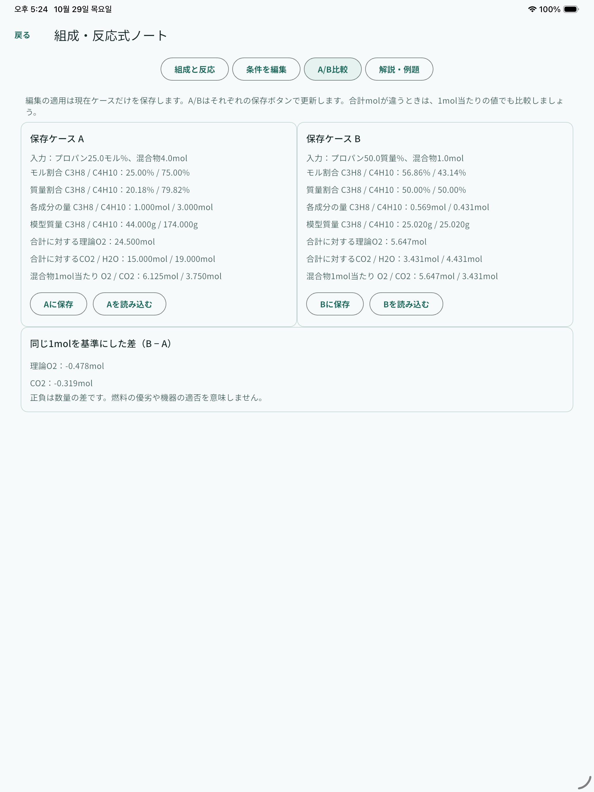

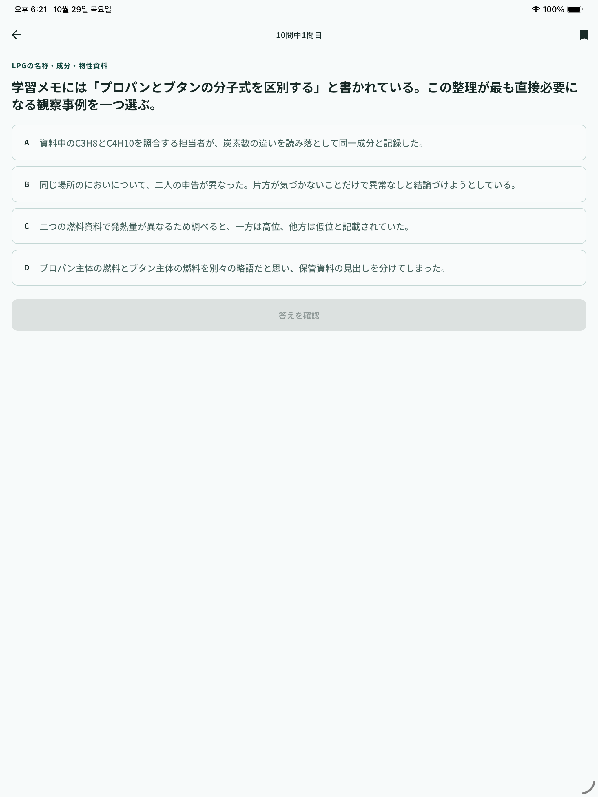

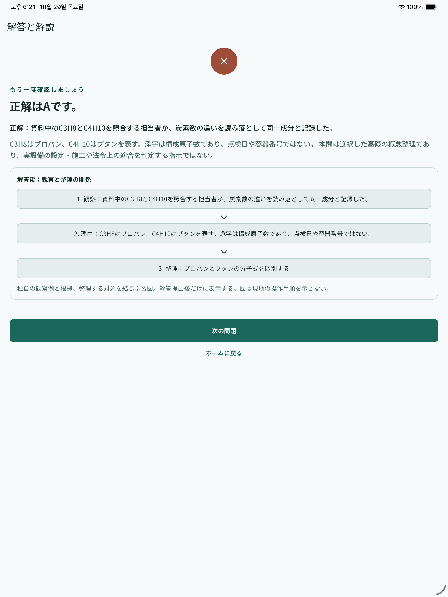

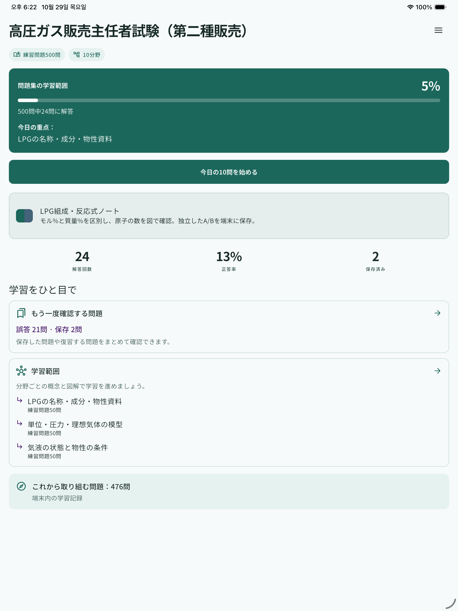

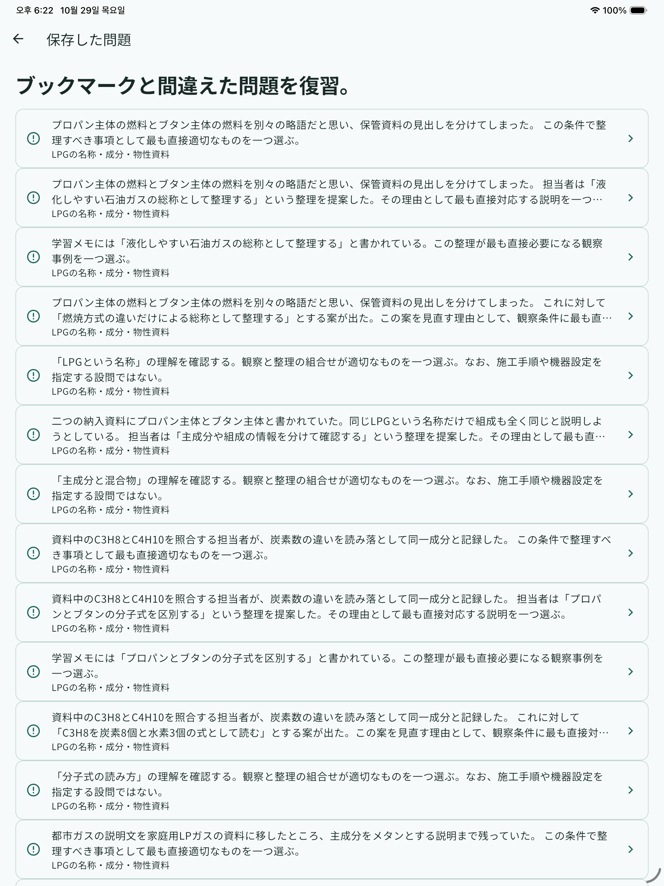

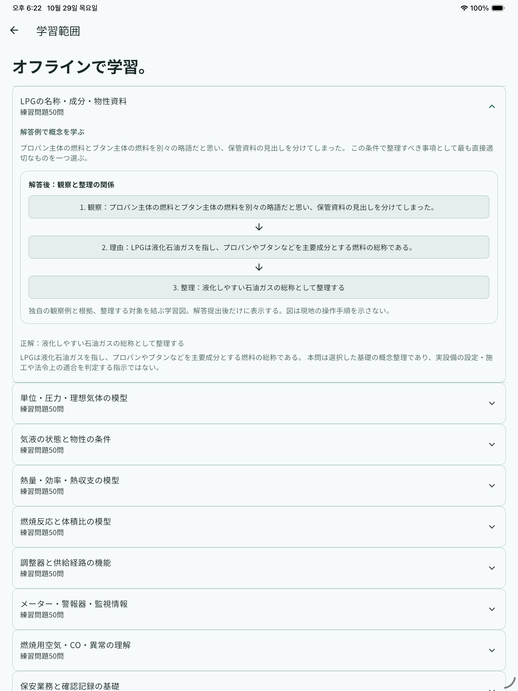